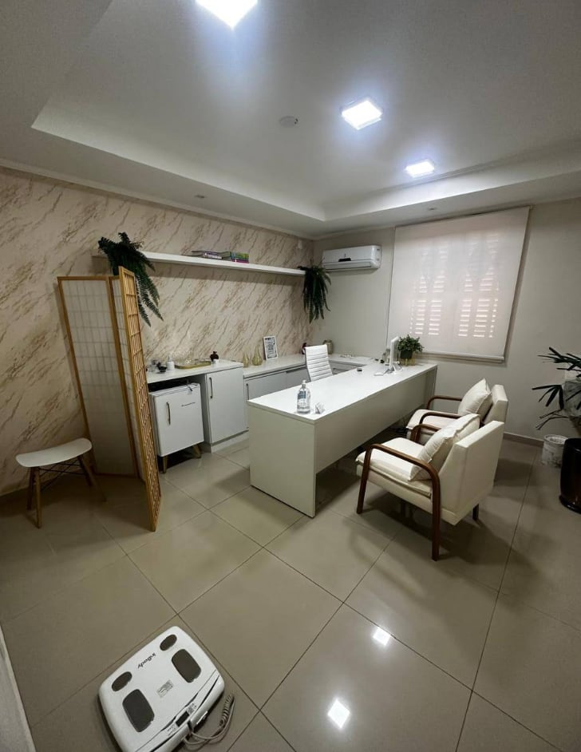
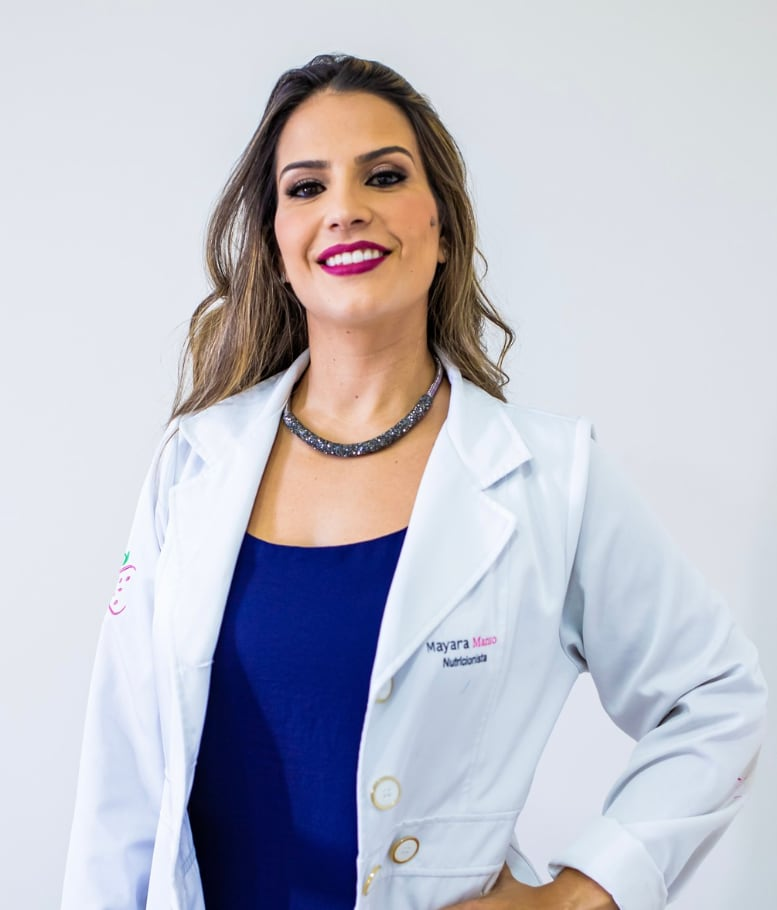

Nutrição integrativa e individualizada, em Campinas e online, para mulheres adultas.
Nutricionista em Campinas para emagrecer com saúde, sem dieta pronta
Nota 5,0 na Doctoralia, com 395 opiniões
Sou a Mayara
Sou nutricionista, formada pela PUCCAMP, com especialização em Nutrição Esportiva e em Fitoterapia. Trabalho com nutrição integrativa e individualizada: olho seus exames, sua rotina e seus objetivos antes de montar o plano. Atendo em Campinas e online.
- Nutrição, PUCCAMP (2011)
- Especialização em Nutrição Esportiva, VP (2013)
- Especialização em Fitoterapia, VP (2016)
- CRN 32638
Já fez tudo certo e o resultado não veio?
Você seguiu a dieta pronta, cortou o que mandaram cortar e, mesmo assim, o corpo não respondeu. Talvez tenha passado por outras nutricionistas e saído com um papel que não cabia na sua rotina.
Aqui o ponto de partida é outro: você, seus exames e o seu dia a dia. A ideia é emagrecer sem passar fome, sem abrir mão de comer bem e cuidando dos seus músculos.

Uma nutrição feita junto com você
Nutrição integrativa e individualizada quer dizer que ninguém recebe o mesmo plano. Eu analiso seus exames de sangue e monto a alimentação e a suplementação de acordo com as suas necessidades e os seus objetivos.
O plano alimentar é construído com você, durante a consulta, levando em conta o que você gosta e o que cabe na sua rotina. Se você treina, a dieta também considera o seu treino.
“Ative seu metabolismo, preserve seus músculos e recupere a forma que você sente falta.”
Escolha como quer ser acompanhada
Presencial em Campinas ou online, por vídeo, para todo o Brasil.
-
Consulta avulsa
1 consulta
Uma consulta completa para começar, tirar dúvidas e sair com seu plano.
R$490
Agendar (abre em nova aba) -
Plano Trimestral
Uma consulta a cada 30 dias
Para ajustar o plano com acompanhamento de perto.
3x R$410
ou R$ 1.190 à vista
Agendar (abre em nova aba) -
Plano Semestral
Uma consulta a cada 30 dias
Por mais tempo, para ir ajustando com calma.
6x R$380
ou R$ 2.190 à vista
Agendar (abre em nova aba)
Bioimpedância avulsa: R$ 160.
Pagamento por transferência, depósito, dinheiro, cartão de crédito e débito. Atendimento particular, sem convênio.
Como é a consulta
Exames e conversa
Começo ouvindo você e analisando seus exames de sangue com calma.
Avaliação com InBody
A bioimpedância InBody 120 mostra massa magra, massa gorda, taxa de metabolismo, hidratação e gordura visceral.
Plano montado junto
Construímos o plano alimentar juntas, ali na consulta, com o que faz sentido para você.
Plano e suplementação na hora
Você sai da consulta com o plano alimentar e a suplementação em mãos.
Suporte semanal no WhatsApp
Durante o acompanhamento, você fala direto comigo toda semana.
O que dizem os pacientes
- Atencioso durante a consulta
- Explicações detalhadas
- Ótimo consultório
- 5,0
- 395 opiniões na Doctoralia
- 5,0
- 6 avaliações no Google
A Mayara é uma das melhores profissionais com quem já me consultei: humana, atenciosa, muito didática e muito detalhista. As consultas são sempre longas e passam muito rápido, recomendo sempre!
Mayara é uma excelente profissional, ela vai além de prescrever um plano alimentar, ela faz um acompanhamento completo, olha os exames, avalia a qualidade do sono, ansiedade e busca trazer soluções para estas dores.
A Mayara é uma excelente profissional, procura ouvir e adaptar as necessidades de cada cliente montando um plano alimentar que realmente dá resultado, ajusta as vitaminas e suplementos conforme necessidade. Faço consultas com ela desde 2018, super recomendo.
Foi muito detalhista nas explicações, leu os exames com muita atenção, pontuando e explicando os resultados. Ouviu minhas queixas, meus gostos e adequou tudo de forma para me ajudar e facilitar.
A Mayara oferece aquele atendimento dos sonhos, muito atenta à nossa demanda e disponível a nos ajudar. Estou há anos com ela […] Sem pressa, oferece uma experiência de atendimento que nos escuta, nos informa e ainda bate um papo acolhedor.
Ótima nutricionista! Muito atenciosa, prestativa e competente. Sempre disposta a ajudar e esclarecer dúvidas, passando muita confiança no atendimento.
Onde e quando atendo
- Endereço
- Clínica Terzis
Rua Frei Antônio de Pádua, 1122, Jardim Guanabara
Campinas - SP, 13073-330
Como chegar (abre em nova aba) - Horário
- Segunda a sexta, das 7h às 18h
Sábado, das 8h às 14h - Online
- Também atendo online, por vídeo, para todo o Brasil.
- Acessibilidade
- Entrada, banheiro e estacionamento acessíveis para cadeira de rodas.
Perguntas frequentes
Você atende online?
Sim. Além do atendimento presencial em Campinas, faço consultas online por vídeo para todo o Brasil.
Você aceita convênio?
Não. O atendimento é só particular.
Quais são as formas de pagamento?
Transferência, depósito, dinheiro, cartão de crédito e cartão de débito. Os planos podem ser pagos à vista ou parcelados (3x no trimestral e 6x no semestral).
O que levo na primeira consulta?
Seus exames de sangue recentes, se tiver. Eles ajudam na análise e na montagem do plano.
Qual a diferença entre os planos?
Nos dois planos há uma consulta a cada 30 dias. O Trimestral dura 3 meses e o Semestral, 6 meses. A consulta avulsa é um atendimento único.
Você faz bioimpedância?
Sim, com o InBody 120. Ela avalia massa magra, massa gorda, taxa de metabolismo, hidratação e gordura visceral. Também pode ser feita avulsa, por R$ 160.
Como funciona o suporte?
Durante o acompanhamento, você tem suporte semanal pelo WhatsApp, direto comigo.

Ficou com alguma dúvida?
Me chame no WhatsApp e eu explico com calma como funciona. Se preferir escolher o horário sozinha, use o calendário da Doctoralia.